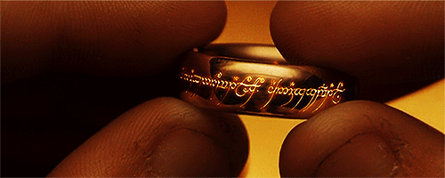

El mundo ha cambiado, lo siento en el agua, lo siento en la tierra, lo huelo en el aire.
Mucho se perdió entonces, pero nadie vive ahora para recordarlo.
Todo comenzó con la forja de los grandes anillos:
- Tres fueron entregados a los elfos, inmortales los mas sabios y honrados de todos los seres.
- Siete a los señores enanos grandes mineros y artesanos de las cavidades montañosas.
- Y nueve, nueve fueron entregados a la raza de los hombres que ansían por encima de todo el poder.
En aquellos anillos residía el poder y la voluntad de gobernar a cada raza,
pero todos ellos fueron engañados, pues otro anillo más fue forjado,
en la tierra de Mordor,
en los fuegos del Monte del Destino,
el Señor Oscuro Sauron forjó en secreto el anillo regente para controlar a todos los demás.

En ese anillo descargó:
- Toda su crueldad.
- Su malicia.
- Su voluntad de dominar todo tipo de vida.
Un anillo para gobernarlos a todos, una a una las comarcas libres de la Tierra Media fueron
sometidas por el poder del anillo pero hubo algunos que resistieron,
una última alianza de hombres y elfos lucharon contra el ejército de Mordor y
en las lomas del Monte del Destino libraron su batalla por la libertad de la Tierra Media.
-
Nombre
-
John Ronald Reuel
-
Apellido
-
Tolkien
-
Nacimiento
-
3 de enero de 1892
-
Fallecimiento
-
2 de septiembre de 1973
Volver al inicio